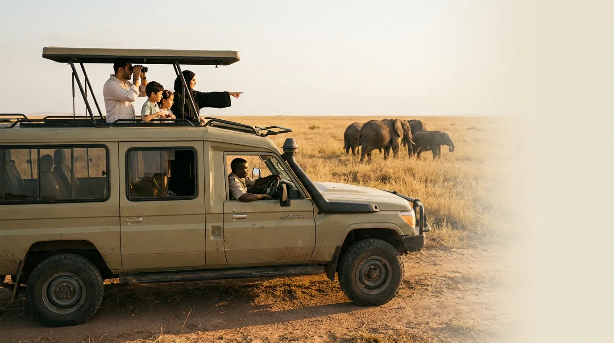
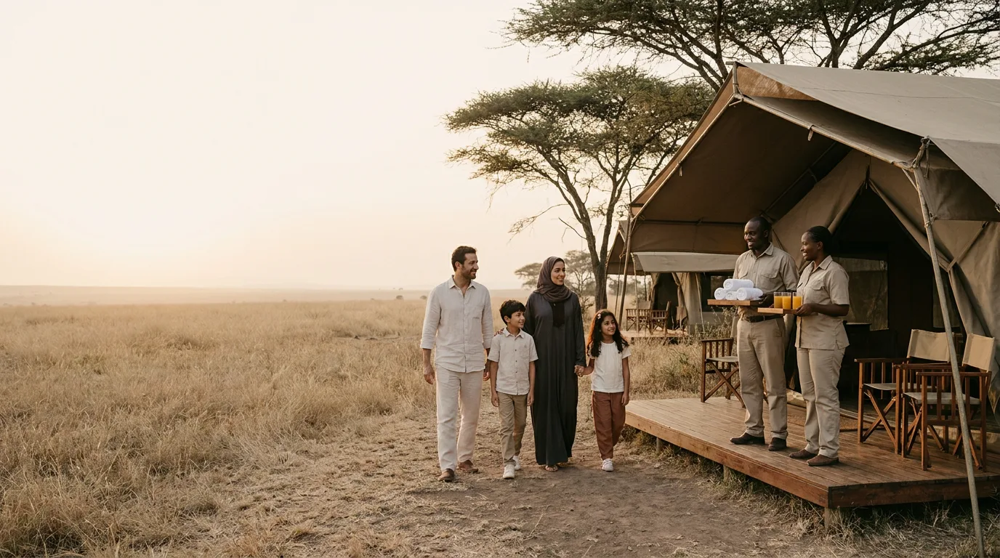
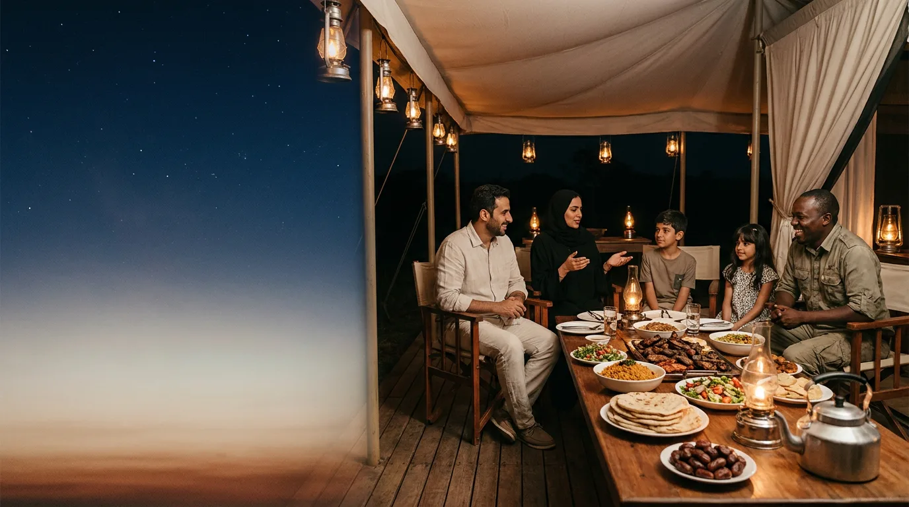
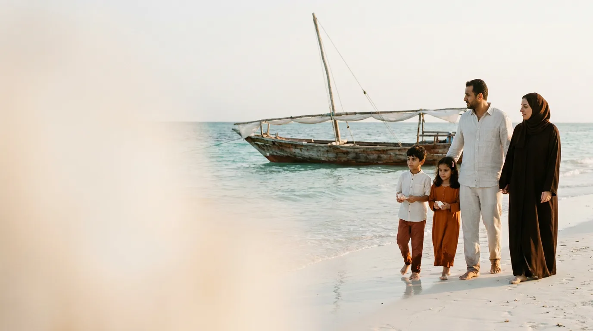
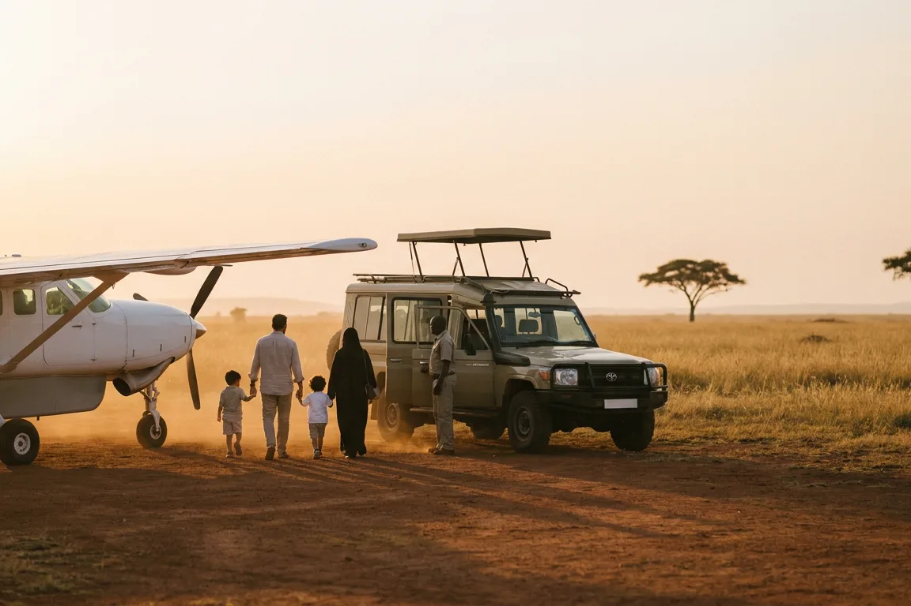

الهجرة الكبرى
مخيمان متنقلان يتبعان القطعان، ويوم كامل في قاع فوهة نجورونجورو، ومنطاد عند الفجر فوق عبور النهر. سفاري بالطائرة بين المخيمات.
ابتداءً من 29,500 ر.ستوقّف واحد حتى كليمنجارو، ثم أربعون دقيقة في طائرة صغيرة، وتكون السهول تحت قدميك قبل الغداء.
مرشدك بانتظارك عند المهبط.
يتحدث العربية، مرخّص، ومعه سيارة لاند كروزر خاصة بسقف يُرفع، وماء بارد في الصندوق، وأول جولة سفاري في الطريق إلى المخيم.
خمس رحلات، من ثمانية إلى اثني عشر يوماً، من السيرينجيتي إلى زنجبار.
خطّط رحلتك
تغادر الرياض أو جدة مساءً وتصل كليمنجارو صباحاً. ومن هناك تحملك طائرة صغيرة فوق السيرينجيتي على ارتفاع يمكنك فيه عدّ قطعان النو، ثم تحطّ على مهبط من التراب الأحمر بعد أربعين دقيقة.
«سمر» هو اسم شجرة الأكاسيا في العربية، الشجرة التي تستريح تحتها كل رحلة سفاري عظيمة. أسسنا الشركة للمسافر السعودي الذي يريد أفريقيا الحقيقية من دون متاعبها.

جولات السفاري في سيارة لاند كروزر مغلقة بسقف يُرفع، وهكذا تُدار الأمور في تنزانيا: ظلّ حين تريده، والسماء كلها حين لا تريده. مرشدك يقرأ الآثار، ويتوقف حين يريد الأطفال التوقف، ويحفظ مسافة أمان من كل ما له أنياب أو أنياب عاجية.
جولتان في اليوم، عند الفجر وآخر العصر، وساعات الحر في ظلّ المخيم.

الأسد والفيل والزرافة والحمار الوحشي والفهد والنمر تعيش كلها على مسافة أسبوع من بعضها في السيرينجيتي ونجورونجورو. لا نعدك بنمر؛ لا أحد صادق يعدك بذلك. لكننا نعدك بالأسود والفيلة، وبحمير وحشية أكثر مما تستطيع تصويره، تراها من السيارة، لا على الأقدام أبداً، ولا تُطعَم أبداً.
من يوليو إلى أكتوبر تعبر الهجرة نهر مارا في الشمال. ومن يناير إلى مارس تلد القطعان في الجنوب.

المخيم خيام من القماش على أرضية خشبية تحت أشجار السمر، بسرير حقيقي ودُشّ ساخن وإطلالة. يستقبل الطاقم السيارة بمناشف باردة وعصير، ويحمل الحقائب، ويدلّك على خيمتك. نختار المخيمات التي تتسع لعائلة من ثمانية بقدر ما تناسب زوجين.

في الداخل: أغطية من الكتان، وناموسية، وفانوس نحاسي، واتجاه القبلة مُعلَّم عند الباب. سجادة الصلاة في كل خيمة، ومواعيد الصلاة محفوظة في برنامج اليوم من دون أن يسأل أحد.
في الليل يُغلق باب الخيمة، ويبقى السهل حيّاً في الخارج.

بين جولة الصباح وجولة العصر يهدأ السهل وتهدأ أنت. المسابح متواضعة، أما الإطلالات فلا: نُزُل على حافة الفوهة يطلّ ستمائة متر إلى أسفل نجورونجورو، ومخيم في السيرينجيتي يطلّ على أفق ليس فيه إلا أشجار السمر.

لحم مشوي، وأرز، وسلطات، وخبز، وتمر، وشاي، وفطور عربي عند الطلب. المطبخ حلال في كل مخيم نتعامل معه، والمرشد يشارككم المائدة إن طلبتم. فوانيس، وموقد نار، وسماء فيها نجوم أكثر مما رأيت منذ طفولتك.

رعى الماساي الماشية في هذه السهول قروناً. زيارة قرية قرب مرتفعات نجورونجورو هي جولة في البيوت وحظيرة الماشية وأعمال الخرز، مع عائلة وافقت على استضافتكم. نذهب مع مرشد من الماساي، ونذهب صباحاً، وندفع للمجتمع مباشرة.

رحلة قصيرة من السيرينجيتي تُنزلك في زنجبار قبل الغداء. رمل أبيض في نونغوي، ومراكب الداو على الماء، وحدائق التوابل، والمدينة الحجرية القديمة بأبوابها المنقوشة ومساجدها. ثلاث ليالٍ أو أربع، ثم العودة إلى البيت.
كل برنامج يشمل الطيران والمخيمات والمرشد والتنقلات والتأشيرة الإلكترونية، بسعر للشخص بالريال السعودي. غيّر ما تشاء ونعيد حساب السعر في اليوم نفسه.
مخيمان متنقلان يتبعان القطعان، ويوم كامل في قاع فوهة نجورونجورو، ومنطاد عند الفجر فوق عبور النهر. سفاري بالطائرة بين المخيمات.
ابتداءً من 29,500 ر.س
خمس ليالٍ من جولات السفاري في تارانجيري ووسط السيرينجيتي، ثم رحلة قصيرة إلى الساحل لأربع ليالٍ على شاطئ نونغوي. الرحلة التي تحجزها معظم العائلات أولاً.
ابتداءً من 34,900 ر.س
طائرات صغيرة تنقلك بين ثلاثة مخيمات في جنوب السيرينجيتي وشماله، فيُقضى كل صباح وكل عصر مع الحيوانات لا على الطريق. المنطاد مشمول.
ابتداءً من 38,500 ر.س
مسافات قصيرة، وأجنحة عائلية بمسابح، ومرشد يحوّل كل جولة إلى حكاية، وثلاثة أيام على البحر في الختام. الأطفال من سن السادسة؛ عائلة واحدة حتى ثمانية أفراد.
ابتداءً من 31,500 ر.س للبالغ · الأطفال من 18,900 ر.س
مخيم خاص، وطائرة خاصة، وفيلا خاصة على الجزيرة. طاهٍ يطبخ ما نشأت عليه، ولا أحد غيركم في الأفق. حتى عشرة ضيوف.
ابتداءً من 68,000 ر.س
أخبرنا متى تستطيع السفر ومن سيرافقك. نردّ خلال يوم واحد، بالعربية أو الإنجليزية، ببرنامج أول وسعر.